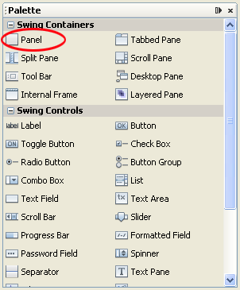
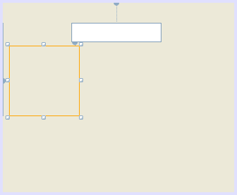
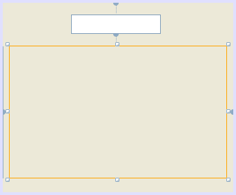
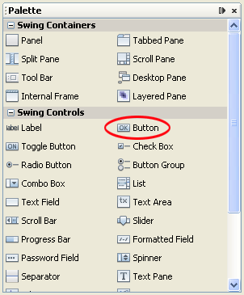
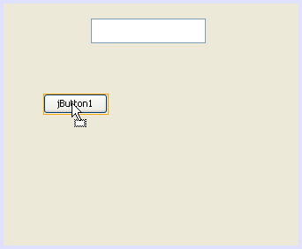
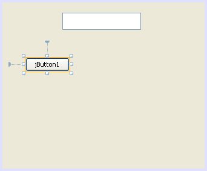
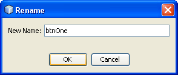
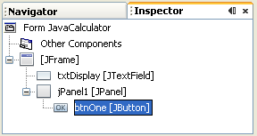
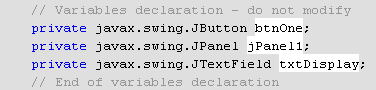

Add a Button to a Java Form
Java Calculator Project: 1 2 3 4 5 6 7 8 9 10
You add a button to a form in the same way you do for text fields - drag and drop. However, as we're going to be adding lots of buttons, it's a good idea to add the buttons to a control called a Panel. If you need to move the buttons, you can then just move the Panel instead. All the buttons will then move with the Panel.
So locate the Panel control in the Palette:

Drag one on to your form. You can't see a Panel, as they'll have the same colour as the form. But you can select it:

Drag the sizing handles so that the Panel fills most of the form:

We can now add a button.
Locate the Button control in the Palette:

Drag one on to your Panel control:

You should then see a button with sizing handles and position lines:

The default name of the button is jButton1. Change this name just like you did for the text field: right click in the Inspector area, and select Change variable name. Change the name of the button to btnOne:

The name of the button will have changed in the Inspector:

A new line of code has also been added:

The new variable name is btnOne, and it is a JButton object, which is a Swing control. Note, too, that a variable has been set up for the panel (we've left this on the default name).
In the next part, you'll learn how to change the properties of Java buttons.